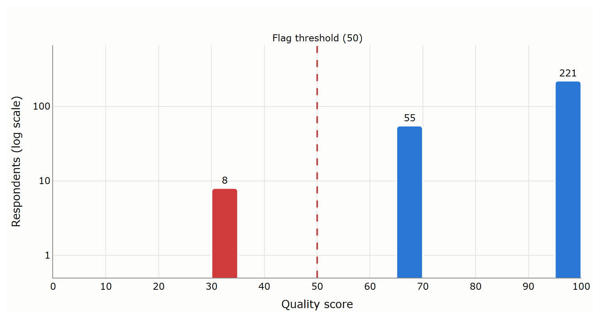
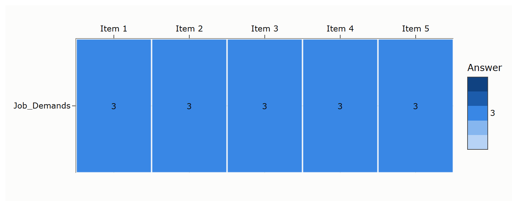
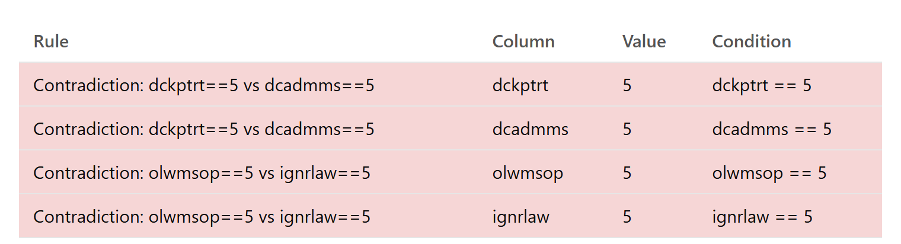
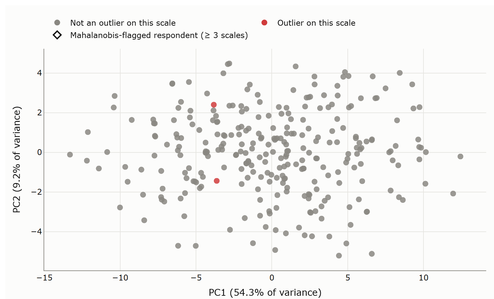

Find the careless respondents before they find their way into your results.
SurveyGuard scans numeric survey data for straightlining, contradictory answers, and multivariate outliers, then hands you a cleaned file and a report that explains every flag.
- 1,498
- Hungarian ESS round 2 respondents checked
- 10
- flagged as suspicious (0.67%)
- 8.4 s
- from upload to result,
397 sbefore the vectorised rewrite - ESS 1–11
- ready-made rules files included
The idea in 30 seconds
No sound needed: every word is on screen.
What it is for
Every survey has respondents who click through without reading: the same answer down a whole grid, "I fully trust politicians" next to "I don't trust parliament at all", or a pattern no one else in the sample produces. Left in, they quietly bend means, correlations, and scale reliabilities.
SurveyGuard checks each respondent with three transparent detectors:
-
StraightliningZero response variability (IRV) inside a scale: the same answer to every item.
-
Logical contradictionsRules you write in plain JSON, for example
trstplt > 8andtrstprl < 2. -
Mahalanobis outliersAnswer patterns far from the rest of the sample, scale by scale. With the bundled ESS rules, a respondent counts only when they stand out on at least three scales.
One flag is a warning, not a verdict
The three results are combined into a 0 to 100 quality score. One detector alone can be wrong: some people really do agree with every item. So with the bundled ESS rules and all three detectors available, it takes two of them to mark someone suspicious (a score below 50).
- 1 of 3 detectors 66.7 Stays in
- 2 of 3 detectors 33.3 Suspicious
Every flag names the rule or scale behind it, so the report can go straight into your methods section. The R package careless computes indices like these for you to combine; SurveyGuard turns them into one verdict, a cleaned file, and a report. No black box, no machine learning: same input, same output.
See it, don't just trust it
These are SurveyGuard's own charts, drawn by its code from the synthetic sample tests/fixtures/ess2_mock.csv (284 respondents) with config/ess2.json. Click a chart to see it full size.


Score distribution
Every quality score, on a log scale so the few suspicious cases stay visible. 8 respondents caught by two detectors sit at 33.3, left of the threshold; 55 caught by one sit at 66.7 and stay in.


Straightlining heatmap
Click a flagged respondent to see their answers cell by cell. This one answered 3 to all five Job Demands items: one colour, zero variability.


Respondent drill-down
The triggered rules, written out next to the person's actual answers. The same respondent gave the most extreme answer, 5, to two opposite statements about doctors, and to two about obeying the law.


Mahalanobis PCA map
Each point is a respondent on the first two principal components of one scale; red points are outliers on it. The distance uses all seven items, so on this flat map an outlier can sit near the middle. In this sample nobody is an outlier on three scales, so this detector flags no one.
Who it is for
- Social science students and researchers working with the European Social Survey or similar questionnaires, who need a defensible data-cleaning step for a thesis or paper.
- Survey methodologists and data managers who want to screen a new wave before anyone starts the analysis.
- Teachers who want to show what careless responding looks like in real data, not in a textbook example.
You do not need to write code: the browser interface does everything. If you prefer scripts, the same engine runs from the command line.
How to try it
You need Python 3.10 or newer and git on your computer. The commands go into a terminal; SurveyGuard then runs in your browser, on your machine.
Get the code:
git clone https://github.com/esst-prog2/surveyguard.git cd surveyguardInstall the dependencies (Python 3.10+):
python -m pip install -r requirements.txtStart the web interface. Streamlit opens it in your browser, usually at
http://localhost:8501:python -m streamlit run app.pyIn the browser, upload your
.csv,.xlsx, or.savfile, choose a bundled rules file, and click Run SurveyGuard.No survey file at hand? Upload
tests/fixtures/ess2_mock.csvfrom the folder you just cloned, a synthetic ESS round 2 sample, and chooseconfig/ess2.json. You should see 284 respondents, 8 of them suspicious.
You get a cleaned CSV without the suspicious respondents and a Markdown diagnostic report you can attach to your methods section.
Prefer the command line?
python detect_anomalies.py tests/fixtures/ess2_mock.csv --rules config/ess2.json --output scored.csv --report report.md